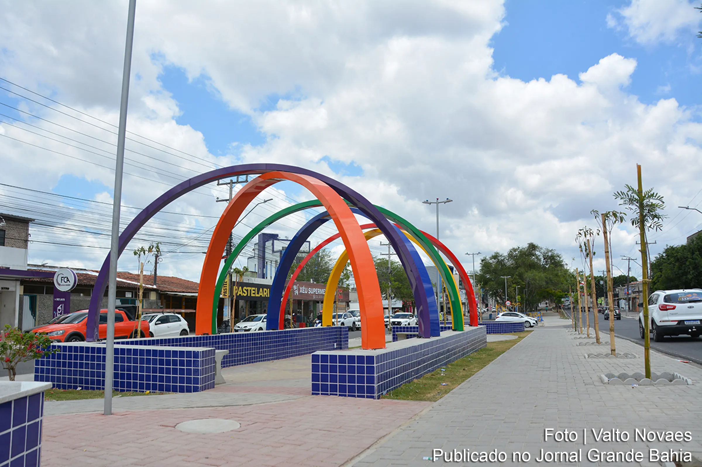
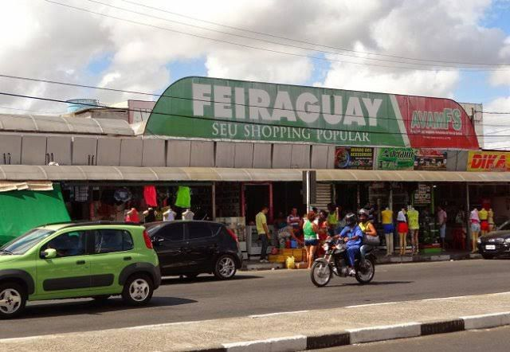
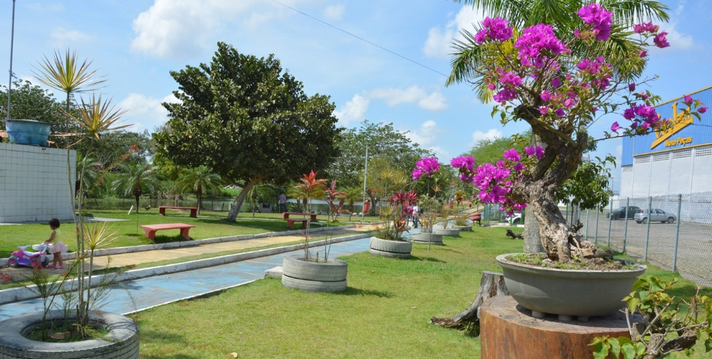

Feira de Santana, a princesa do sertão!
Feira de Santana é um município brasileiro no interior da Bahia, Região Nordeste do Brasil.
É a cidade-sede da Região Metropolitana de Feira de Santana e da Região Imediata de Feira de
Santana, que é formada por 33 cidades. Está localizada no centro-norte baiano, a 108 quilômetros
da capital do estado, Salvador, com a qual se liga através da BR-324.
Os 3 principais locais para visitar
Avenida Fraga Maia

Próximo a Avenida Maria Quiteria, a avenida Fraga Maia é uma das principais avenidas da cidade,
possui árvores lindas e um belo passeio em meio a Avenida para quem gosta de passear e se exercitar.
Também possui diversos pontos de venda em volta, Fast Foods, Restaurantes, Sorveterias
e muito mais!
A Fraga Maia sempre é movimentada, um espaço excelente para quem quer se divertir! O que será que
estão falando a respeito no abrir nova página de pesquisa do Twitter
Shopping Popular Feiraguay

O Feiraguay é o shopping mais popular de feira, la você encontra de tudo, desde brinquedos à
roupas, itens para motos e carros, itens para celulares e tudo mais que possa imaginar, do mais
piratex ao original, la vende de tudo. “Feiraguay: para todos os bolsos e necessidades” - by
José Cláudio Rocha
Veja as principais noticias da região! abrir nova página do Instagram do Feiraguay
Parque Municipal Erivaldo Cerqueira

Principal ponto turistico para quem gosta de sair em um final de semana com a familia, andar por
perto de um lago, vê aves, arvores, apreciar a natureza. Há também a possibilidade de nadar no
lago, porém tome cuidado, a ultima vez que alguem fez isso acabou preso... Então não deixe que te
vejam!
Veja como chegar ao parque: abrir nova página para a localização
no google maps
voltarInicio